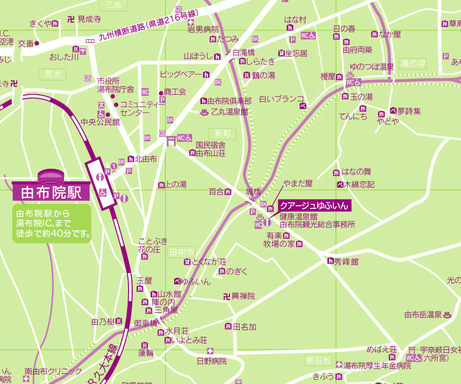

第3回研究会
幹事
西岡 由紀子, 鈴木 厚, 野木 達夫
日程
2007年5月12日（土）、5月13日（日）
場所
- ペンション木綿恋記（ゆふこいき）
- 大分県由布市湯布院町川上2760-1
- 由布院温泉観光協会 散策マップ 
宿泊
同上
費用
- 1泊2日＋参加費：13500円（予定）
研究会スケジュール（宿泊型）
- 2007年5月12日（土）
- 13:00-13:30 受付
- 13:30-15:00 講演I部
- 19:30-20:50 講演II部
- 2007年5月13日（日）9:00-12:00 講演III部